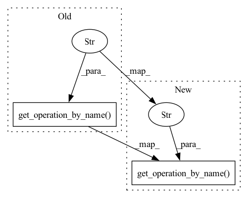

Pattern ID :30768
Before Change
self.assertEqual(3, len(ordered_modules_list))
// Check that correct alpha was used
alpha_op = new_sess.graph.get_operation_by_name("reduced_LeakyRelu/alpha" )
reduced_alpha = alpha_op.get_attr("value").float_val[0]
self.assertEqual(orig_alpha, reduced_alpha)
sess.close()After Change
self.assertEqual(3, len(ordered_modules_list))
// Check that correct alpha was used
reduced_alpha = new_sess.graph.get_operation_by_name("reduced_LeakyRelu" ) .get_attr("alpha")
self.assertEqual(orig_alpha, reduced_alpha)
sess.close()In pattern: SUPERPATTERN
Frequency: 4
Non-data size: 2
Instances Fragment ID: 90689846
Project Name: quic/aimet
Commit Name: 2b0b424512cf6b101a1e48aba9d327da15718577
Time: 2020-05-21
Author: quic_klhsieh@quicinc.com
File Name: TrainingExtensions/tensorflow/test/python/winnow/test_winnow.py
M Class Name: TestTfModuleReducer
N Class Name: TestTfModuleReducer
M Method Name: test_reducing_leakyrelu(1)
N Method Name: test_reducing_leakyrelu(1)
M Parent Class: unittest.TestCase
N Parent Class: unittest.TestCase
M File Name: TrainingExtensions/tensorflow/test/python/winnow/test_winnow.py
N File Name: TrainingExtensions/tensorflow/test/python/winnow/test_winnow.py
M Start Line: 797
M End Line: 809
N Start Line: 797
N End Line: 807
Before Change
layer1 = Layer(sess, sess.graph.get_operation_by_name("conv1/Conv2D"))
layer2 = Layer(sess, sess.graph.get_operation_by_name("conv2/Conv2D"))
layer3 = Layer(sess, sess.graph.get_operation_by_name("conv3/separable_conv2d"))
layer4 = Layer(sess, sess.graph.get_operation_by_name("linear/MatMul" ) )
layer_db = MagicMock()
layer_db.__iter__.return_value = [layer1, layer2, layer3, layer4]After Change
conv1_op = sess.graph.get_operation_by_name("conv1/Conv2D")
conv2_op = sess.graph.get_operation_by_name("conv2/Conv2D")
conv3_op = sess.graph.get_operation_by_name("conv3/separable_conv2d")
matmul1_op = sess.graph.get_operation_by_name("linear/MatMul" )
// output shape in NCHW format
conv1_op_output_shape = conv1_op.outputs[0].shape
conv2_op_output_shape = conv2_op.outputs[0].shape Fragment ID: 90689844
Project Name: quic/aimet
Commit Name: 86a3a1b5eea3be69a632d5c073277af770613eb7
Time: 2020-05-21
Author: quic_klhsieh@quicinc.com
File Name: TrainingExtensions/tensorflow/test/python/test_layer_selector.py
M Class Name: TestLayerSelector
N Class Name: TestLayerSelector
M Method Name: test_select_all_conv_layers(1)
N Method Name: test_select_all_conv_layers(1)
M Parent Class: unittest.TestCase
N Parent Class: unittest.TestCase
M File Name: TrainingExtensions/tensorflow/test/python/test_layer_selector.py
N File Name: TrainingExtensions/tensorflow/test/python/test_layer_selector.py
M Start Line: 52
M End Line: 66
N Start Line: 52
N End Line: 77
Before Change
tf.keras.layers.Dense(64 * 28 * 28, name="linear")
])
layer1 = Layer(sess, sess.graph.get_operation_by_name("conv1/Conv2D" ) )
layer2 = Layer(sess, sess.graph.get_operation_by_name("conv2/Conv2D"))
layer3 = Layer(sess, sess.graph.get_operation_by_name("conv3/separable_conv2d"))
layer4 = Layer(sess, sess.graph.get_operation_by_name("linear/MatMul"))After Change
tf.keras.layers.Dense(64 * 28 * 28, name="linear")
])
conv1_op = sess.graph.get_operation_by_name("conv1/Conv2D" )
conv2_op = sess.graph.get_operation_by_name("conv2/Conv2D")
conv3_op = sess.graph.get_operation_by_name("conv3/separable_conv2d")
matmul1_op = sess.graph.get_operation_by_name("linear/MatMul")
Fragment ID: 90689837
Project Name: quic/aimet
Commit Name: 86a3a1b5eea3be69a632d5c073277af770613eb7
Time: 2020-05-21
Author: quic_klhsieh@quicinc.com
File Name: TrainingExtensions/tensorflow/test/python/test_layer_selector.py
M Class Name: TestLayerSelector
N Class Name: TestLayerSelector
M Method Name: test_select_all_conv_and_fc_layers(1)
N Method Name: test_select_all_conv_and_fc_layers(1)
M Parent Class: unittest.TestCase
N Parent Class: unittest.TestCase
M File Name: TrainingExtensions/tensorflow/test/python/test_layer_selector.py
N File Name: TrainingExtensions/tensorflow/test/python/test_layer_selector.py
M Start Line: 83
M End Line: 97
N Start Line: 94
N End Line: 119
Before Change
if op.type == "SimpleRNN":
simple_rnn_detected = True
inner_list = op.internal_ops
self.assertTrue(op.get_module() == sess.graph.get_operation_by_name("simple_rnn/while/MatMul" ) )
self.assertTrue(op.name == "simple_rnn")
self.assertTrue(simple_rnn_detected)
self.assertTrue(len(inner_list) == 49)After Change
simple_rnn_detected = True
inner_list = op.internal_ops
self.assertEqual(49, len(inner_list))
self.assertEqual(op.get_module(), sess.graph.get_operation_by_name("rnn0/while/MatMul" ) )
self.assertEqual("rnn0", op.name)
self.assertTrue(simple_rnn_detected)
Fragment ID: 90689848
Project Name: quic/aimet
Commit Name: e484e14e2f1cb569964b67fda431f17087449fc7
Time: 2020-10-01
Author: quic_akhobare@quicinc.com
File Name: TrainingExtensions/tensorflow/test/python/test_tf_connected_graph_with_subgraph_matcher.py
M Class Name: TestTfConnectedGraph
N Class Name: TestTfConnectedGraph
M Method Name: test_model_with_simple_rnn_layer(1)
N Method Name: test_model_with_simple_rnn_layer(1)
M Parent Class: unittest.TestCase
N Parent Class: unittest.TestCase
M File Name: TrainingExtensions/tensorflow/test/python/test_tf_connected_graph_with_subgraph_matcher.py
N File Name: TrainingExtensions/tensorflow/test/python/test_tf_connected_graph_with_subgraph_matcher.py
M Start Line: 412
M End Line: 437
N Start Line: 412
N End Line: 437